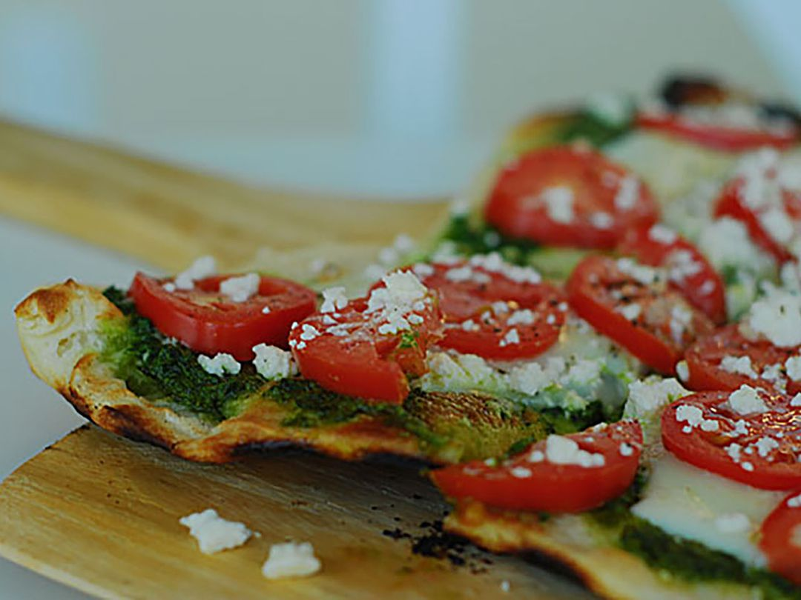

Pesto-Pizza

Description
This pesto pizza can be made with your favorite prepared pesto or homemade pesto.
it's so quick to make for a light and flavorful altenative to regular cheese and tomato pizza
1(12 inch) pre-baked pizza crust
1/2 cup pesto
1 ripe tomato, chopped
1(2 ounce) can chopped black olives, drained
1/2 small red onion, chopped
1(4 ounce) can artichoke hearts, drained and sliced
1 cup crumbled feta cheese
Steps
1. Preheat the oven to 450 degrees F(230 degrees C).
2. Spread pesto on pizza crust. Top with tomato, bell peppers, olives, red onion, artichoke hearts,and feta cheese
3. Bake in the preheated oven until cheese is melted and browned, 8 to 10 minutes.
HOME